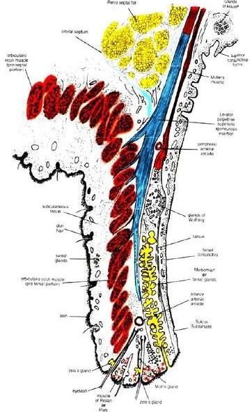

Part I · Minute anatomy
Layer 6 — The palpebral conjunctiva
- It is thin and vascular and firmly adherent to the tarsus.
- 2 mm above the lid margin it shows a horizontal groove known as the sulcus subtarsalis.
Landmarks of a cut section skin → orbicularis → orbital septum → levator aponeurosis → tarsus with meibomian glands → palpebral conjunctiva.
Illustrate a cut section demonstrating the layers of the upper eyelid — minute anatomy of the eyelids.
